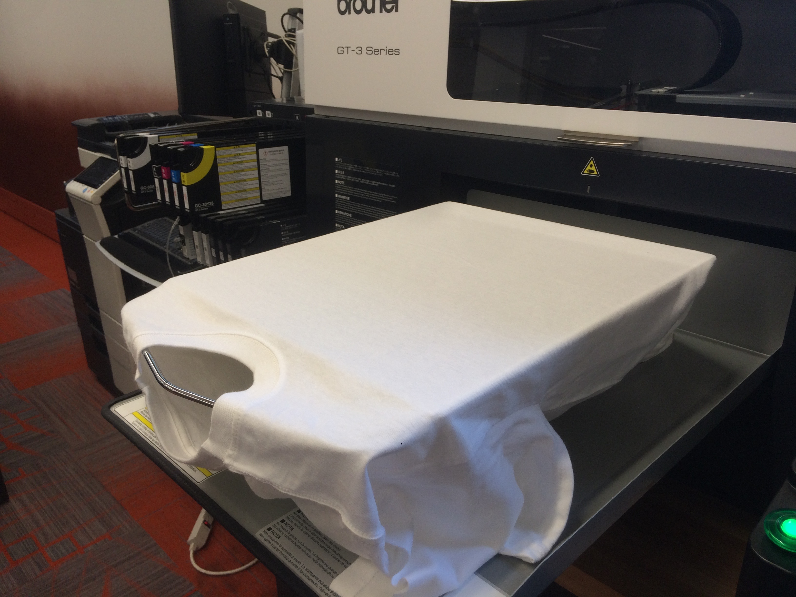
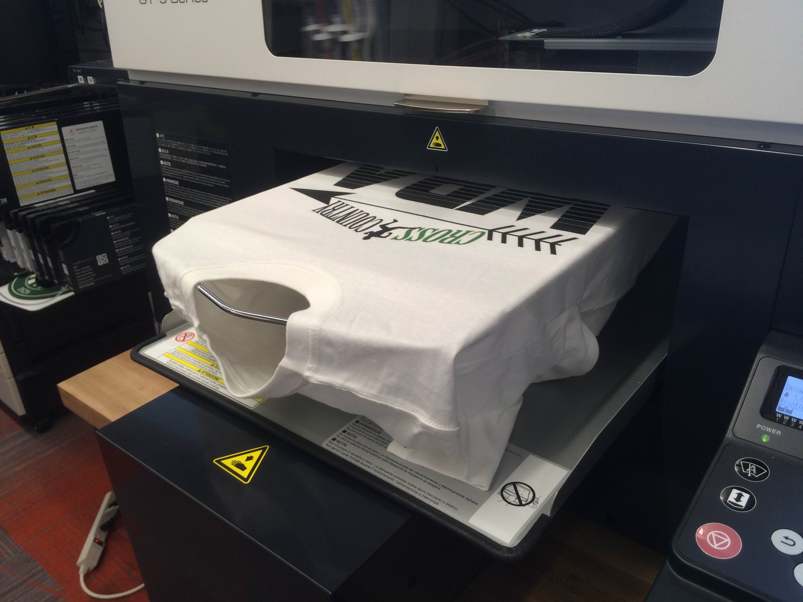
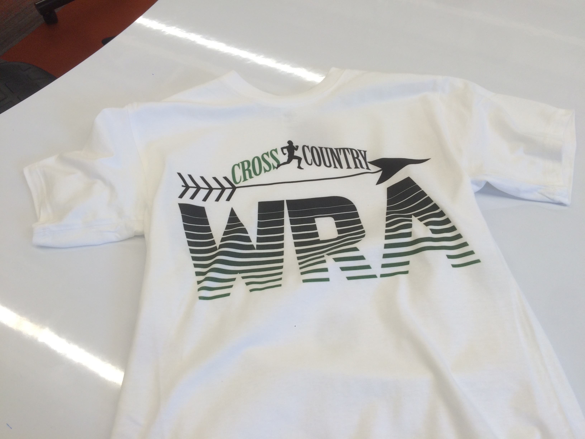
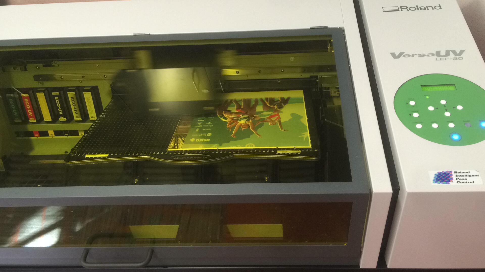
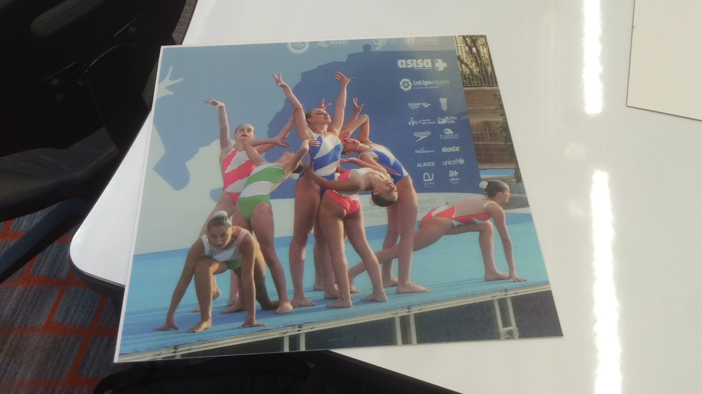

T-Shit
Our first task of the 3rd Rotation was to create an original T-Shirt with the Garment printer.
I decided to make a T-Shirt for my X-Country team. I quickly came up with this original design
in photoshop.



Then, I created the printable file with the program GT3PDIP. File:
XC T-Shirt
UV Printer
Our next 2 projects both involved the utilitzation of the UV Printer that CTIC has.

A UV Printer uses UV Lights to cure the paint onto the surface of the material. Therefore, the ink
won't get off unless the material is scratched. Our VersaUV LEF-200 can print on any material, including:
PVC, plastics, leather, fabric, canvas, metal, glass and wood.
12" x 12" Puzzle
The first thing we did with the UV Printer, after a long process of setup, was printing a 12" by 12"
puzzle. I decided to print a puzzle of my sister's synchronized swimming team.


These are images of the process and final result (Before cutting it).
IPhone 5 Case
The second project we made with the UV Printer was either printing a phone case,
a golf ball or a paper mache box. I decided to print another picture of my sister in a phone case.

These are images of the process and final result.